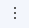

Центр приложений Creatio (Application Hub) позволяет выполнять совместное моделирование приложений любой сложности в no-code дизайнере.
Перейти в Центр приложений вы можете из дизайнера системы либо по клику на в правом верхнем углу → Центр приложений.
Это позволяет организовать эффективное взаимодействие команды на этапе настройки и тестирования приложения.
Для каждого сотрудника будут доступны среды, на которых выполняются работы, и реализованные решения.
Центр приложений доступен в Creatio независимо от типа развертывания. Вся функциональность Центра приложений, описанная в данной статье, доступна для облачных сред. Для приложений onsite, а также средах, не подключенных к какой-либо организации, отображается раздел с приложениями конкретной среды без возможности перехода между средами, приглашения пользователей, управления профилем.
При регистрации в Центре приложений создаются две учетные записи: для пользователя и для организации.
- Учетная запись пользователя используется для входа в Центр приложений и на среды.
- Учетная запись организации необходима, чтобы делиться приложениями и совместно с коллегами их настраивать. По умолчанию для каждого пользователя, который регистрируется самостоятельно, а не переходит по ссылке из письма-приглашения, создается учетная запись организации. Для совместной работы в Центре приложений приглашайте участников в вашу команду. Права доступа членов команды определяются при помощи ролей пользователей:
- Администратор имеет полный доступ ко всем средам компании и права на управление ими. Кроме возможностей, которые предоставляются правом на редактирование, администратор также может приглашать других пользователей к совместной работе или удалять их из организации. В организации может быть несколько администраторов, но обязательно должен быть как минимум один.
- Разработчик имеет полный доступ к средам разработки и тестирования, а также тест-драйвам, зарегистрированным сотрудниками организации. В организации может быть несколько разработчиков, но обязательно должен быть как минимум один.
Если пользователь, который является одним из администраторов, удалит свою учетную запись, то другие члены команды смогут продолжить работу над приложениями организации. Удалить единственного администратора из организации нельзя.
Пригласить пользователей в команду
- В меню Пользователи нажмите кнопку Добавить пользователя (Рис. 1).
Рис. 1 — Переход в меню Пользователи в центре приложений
- Нажмите кнопку Добавить пользователя. Откроется окно приглашения пользователей.
- Укажите в открывшемся окне email-адрес пользователя, которого вы хотите пригласить к совместной работе, его роль и нажмите Отправить приглашение (Рис. 2).
Рис. 2 — Приглашение пользователя

В результате на указанный адрес будет отправлено письмо с приглашением зарегистрироваться в Центре приложений. Приглашенный пользователь отобразится в меню Пользователи с установленной для него ролью и статусом “Приглашен”.
Когда пользователь принимает приглашение и регистрируется в системе, то его статус изменяется на “Активен“.
В меню Пользователи вы можете управлять пользователями при наличии прав администратора.
Если для пользователя установлен статус “Приглашен”, то вы можете отменить приглашение, отправить приглашение повторно или изменить данные пользователя, например, его роль. Для выбора действия наведите курсор на строку с именем нужного пользователя, нажмите кнопку  и выберите нужный вариант.
Если вы хотите отредактировать данные пользователя, то выберите вариант Изменить.
На открывшейся странице внесите новые данные и примените изменения по кнопке Сохранить (Рис. 4).
Профиль пользователя в статусе “Активен” вы можете деактивировать или изменить в меню кнопки .
Профиль пользователя в статусе “Неактивен” вы можете активировать или изменить в меню кнопки .
Выбрать среду для работы
В центре приложений сформирована единая библиотека используемых в компании сред, с помощью которой вы можете упорядочить работы по кастомизации вашего сайта.
Чтобы отобразить список доступных сред выберите меню в правом верхнем углу (Рис. 5).
В перечне сред отображаются как текущие облачные среды компании, так и тест-драйвы, заказанные участниками организации. Для каждой среды показан ее текущий статус при помощи значка слева.
Вы можете переключаться между средами вашей организации без ввода логина и пароля. Для этого используется функциональность Creatio ID, основанная на механизме SSO. После создания учетной записи в Центре приложений вы получаете возможность переходить на любой сайт организации согласно своим правам доступа. При входе на сайт будет автоматически создана учетная запись пользователя, связанная с основной учетной записью в центре приложений.
Вы можете выбрать среду и перейти к управлению ее приложениями, управлению самой средой или к конфигурации (Рис. 6).
Создать приложение
Вы можете создавать приложения любой сложности в no-code дизайнере Центра приложений. Для совместной работы доступны следующие возможности:
- Добавление интеграций.
- Настройка процессов и кейсов.
- Дизайн пользовательских интерфейсов с использованием drag-and-drop и интерактивных подсказок.
Для перехода к созданию приложения в меню Центр приложений нажмите кнопку Новое приложение (Рис. 7).
Подробнее Создать пользовательское приложение, Настроить интерфейс приложения.